Section 3.4: Outliers and Boxplots
Learning Objectives
1.Determine and interpret the 5-number summary.
2.Identify outliers.
3.Create and interpret boxplots.
The goal of this section is to use the quartiles to identify outliers and to create a new type of display, called a boxplot. At this point we can describe a distribution in terms of its center, variation, and shape.
•Center- (section 3.1) a way to describe the middle, or most typical.
•Variation- (section 3.2) a way to describe how much the data varies.
•Distribution- (section 2.2) a way to describe the shape of the distribution.
•Outliers- are there any highly unusual values?
The 5-number Summary
Definition 1
The 5-number summary of a set of quantitative data consists of the minimum value, the quartiles, and the maximum value in the data set. In notation, the 5-number summary is Min, Median , , and Max.
Example 1: Finding the 5-number summary
Find the 5 number summary for the quiz scores from a small class (see section 3.3 example 10)
Table 21: Quiz Scores | ||||||||||
|---|---|---|---|---|---|---|---|---|---|---|
8 | 5 | 7 | 5 | 9 | 4 | 9 | 4 | 10 | 3 | 9 |
Solution:Step 1:Arrange the data in ascending order. You can do this by eye because the data set is small. But for any large data set, use technology to sort the data.
344557899910
In section 3.3, example 10, we found that the quartiles are . The minimum value is 3, and the maximum value is 10. So, the 5-number summary for this data set is 3, 4, 7, 9, 10.
You can also type the data into STATBELT Utility and select Descriptive Statistics → Basic Statistics. Check the column with the data and click “Show results in a new window.” The 5-number summary (Min, Q1, Q2, Q3, Max) is included in the output, shown in figure 3.43.
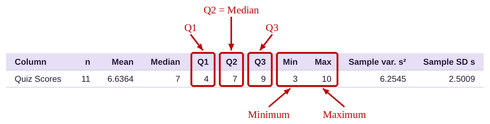
Figure 3.43: Summary statistics including the 5-number summary.
Example 2: Finding the 5-number Summary from Data
Table 22 lists the average poverty rates for all 50 states and the District of Columbia. You can copy the poverty rate data (opens in a new tab). Find the 5-number summary for this data set.
Table 22: Average Poverty Rates in the US from 2016-2018 | |||||||
|---|---|---|---|---|---|---|---|
Alabama | 16.0 | Illinois | 10.9 | Montana | 10.4 | Rhode Island | 10.3 |
Alaska | 12.2 | Indiana | 11.8 | Nebraska | 10.4 | South Carolina | 14.1 |
Arizona | 14.4 | Iowa | 9.2 | Nevada | 12.2 | South Dakota | 11.8 |
Arkansas | 15.5 | Kansas | 10.8 | New Hampshire | 6.4 | Tennessee | 12.6 |
California | 12.5 | Kentucky | 15.3 | New Jersey | 9.1 | Texas | 13.7 |
Colorado | 8.9 | Louisiana | 19.8 | New Mexico | 18.7 | Utah | 7.9 |
Connecticut | 9.9 | Maine | 12.6 | New York | 11.8 | Vermont | 9.6 |
Delaware | 9.6 | Maryland | 7.1 | North Carolina | 14.1 | Virginia | 10.7 |
District of Columbia | 14.9 | Massachusetts | 9.8 | North Dakota | 10.9 | Washington | 10.3 |
Florida | 13.6 | Michigan | 11.0 | Ohio | 12.8 | West Virginia | 17.2 |
Georgia | 14.7 | Minnesota | 8.7 | Oklahoma | 14.0 | Wisconsin | 9.5 |
Hawaii | 9.5 | Mississippi | 19.8 | Oregon | 10.6 | Wyoming | 11.4 |
Idaho | 11.3 | Missouri | 11.9 | Pennsylvania | 11.5 | ||
Solution:If you have saved this data, you can reopen it with Data → Import or export data. Otherwise, you can copy and paste it again or load it from the “Sample Data” menu. The path is the same as it has been throughout the chapter. Select Descriptive Statistics → Basic Statistics. Check the column “Average Poverty rate 2016-2018” and click “Show results in a new window.” The output is below.
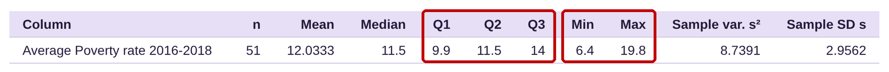
The 5-number summary is Minimum = 6.4, , and Maximum = 19.8. That means that about 25% of states have poverty rates between 6.4% and 9.9%. About 25% of states have poverty rates between 9.9% and 11.5%. About 25% of states have poverty rates between 11.5% and 14%, and about 25% of states have poverty rates between 14% and 19.8%.
Boxplots without Outliers
We use the 5-number summary to create a new diagram, called a boxplot. We first consider boxplots when there are no outliers (highly unusual observations when compared to the rest of the data). A boxplot allows us to visualize the quartiles, IQR, and the Range of the data. It is sometimes called a “whisker plot.” Figure 3.44 shows the format for a boxplot when there are no outliers.
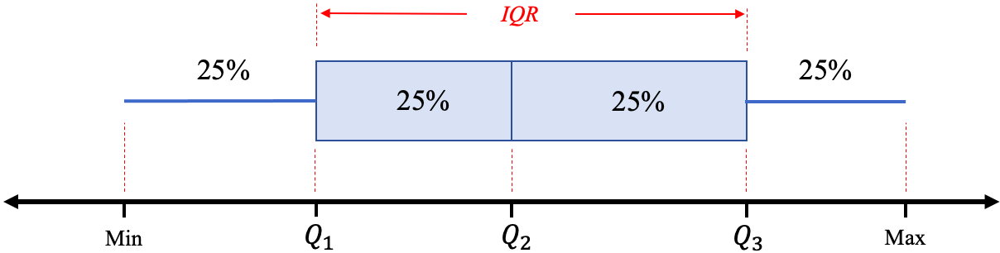
Figure 3.44: Format for a boxplot. What is shown in red is not part of the plot.
The “box” contains the middle 50% of data, and so its width is the interquartile range. We can also visualize the range of the data by looking at the minimum and maximum values. The lines on the sides of the box are called the “whiskers.” The left whisker is drawn from the minimum to the left side of the box at , and the right whisker is drawn from the right side of the box at to the maximum.
Example 3: Create a Boxplot by Hand
Use the data from Table 22, the average poverty rates in the United States, to create a boxplot. The 5 -number summary is Minimum = 6.4, , and Maximum = 19.8. Assume there are no outliers.
Solution:Since we have found the 5-number summary in example 2, we will use it to create the boxplot. The 5-number summary is Minimum = 6.4, , and Maximum = 19.8
Step 1:Draw a horizontal line long enough to include the minimum and the maximum data values and scale it with equal spacing. Draw vertical line segments at each of the quartiles.
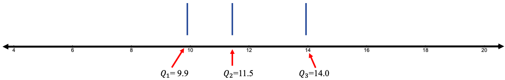
Step 2:Complete the box for the middle portion by adding horizontal lines.
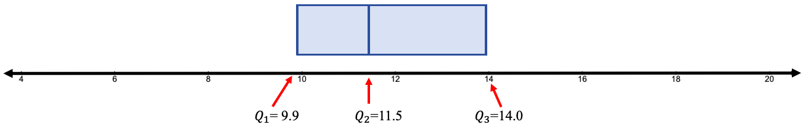
Step 3:Place a dot at the minimum and maximum values.
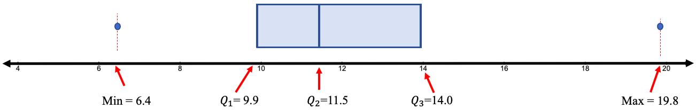
Step 4:Draw line segments from the left side of the box to the minimum, and from the right side of the box to the maximum.
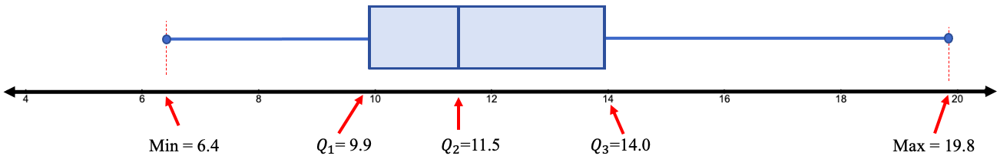
Congratulations! Your boxplot is complete!

Important Point!
When you draw a boxplot, make sure that the horizontal line has tick marks that are labeled using increments that are equally spaced! If they are not spaced correctly, your boxplot will be misleading!
For the most part, we will use technology to make boxplots for us. It is, however, instructive to see how they are created to better interpret the results. To make a boxplot using STATBELT Utility, follow the steps below.
STATBELT Utility- Making Boxplots
Open STATBELT Utility and type or paste the data into one column. Type a name for the column in its heading.
1.Select Graphs → Boxplot.
2.Under “Columns to plot,” check the column. (Check two or more columns to draw their boxplots on the same axes.)
3.Check “Show outliers (modified boxplot),” then click “Open graph in a new window.” STATBELT Utility always draws the boxes horizontally.
Example 4: Creating a Boxplot using STATBELT Utility
Table 22 lists the average poverty rates for each state and the District of Columbia in the United States. You can copy the poverty rate data (opens in a new tab). Use STATBELT Utility to create a boxplot.
Solution:Since the data are already in STATBELT Utility, select Graphs → Boxplot. Check “Average Poverty rate 2016-2018” under “Columns to plot.” Check “Show outliers (modified boxplot)” and click “Open graph in a new window.” The output is given in figure 3.45.
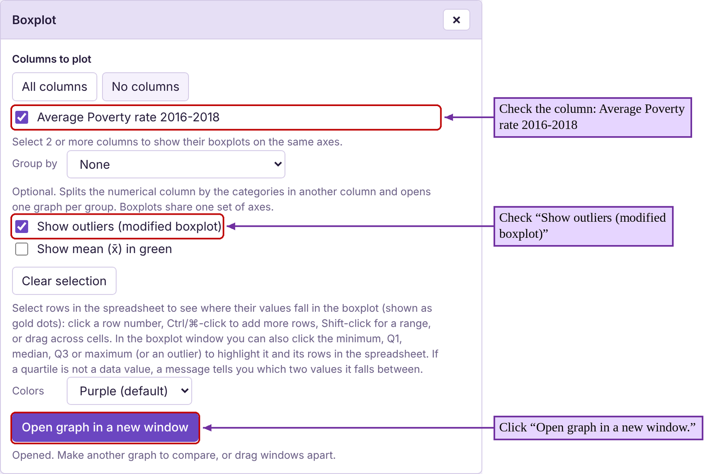
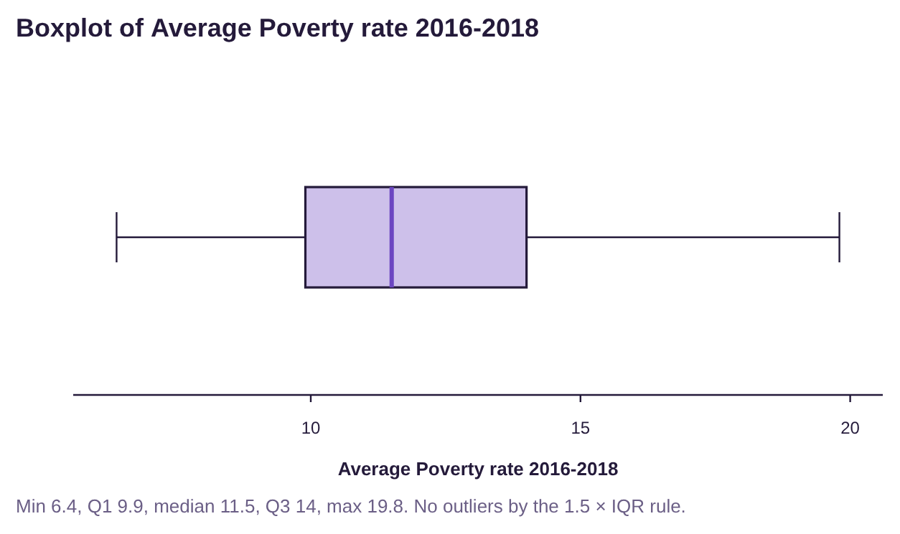
Figure 3.45: STATBELT Utility version of the boxplot for the poverty data set.
Outliers
You may have noticed the option “Show outliers (modified boxplot)” that we checked when we used STATBELT Utility to create the boxplot in the last example.
So far, we have not specified what makes an unusual observation an outlier. We will now define it precisely. To do so, we will first need to define the “fences”.
Definition 2
The fences for a set of quantitative data are determined by the quartiles. See figure 3.46.
The left fence, or lower fence is
The right fence, or upper fence is
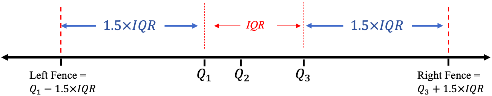
Figure 3.46: The fences of a data set.
Once we find the fences, we define an outlier to be an observation that is not between the fences.
Definition 3
In words, an Outlier is an observation that is far outside the normal range of values for the data.
More precisely, an outlier for a set of quantitative data is an observation that is either
1) less than the left fence, or
2) greater than the right fence
Data between the fences are typical. Data not between the fences are outliers. See figure 3.47.
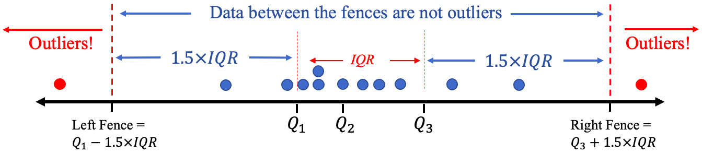
Figure 3.47: Outliers are marked in red and are outside (not between) the fences.
How to Identify Outliers in a Set of Data
1.Find the quartiles: , = the median, and .
2.Compute the interquartile range, .
3.Compute the left fence and the right fence .
4.Any observation that is not between the fences is an outlier. In other words, outliers are either less than the left fence, or greater than the right fence.
Example 5: Checking for Outliers
Find the fences and check the average poverty rates data set (Table 22) for outliers. You can copy the poverty rate data (opens in a new tab). We found the 5-number summary in example 2, with the STATBELT Utility output given in figure 3.48.
Figure 3.48: Summary output for example 5.
Solution:Step 1:The quartiles are .
Step 2:The interquartile range is
Step 3:The left or lower fence is
The right or upper fence is
The minimum was 6.4, so there were no poverty rates less than the left fence = 3.75. The maximum poverty rate was 19.8, so there were no poverty rates higher than the right fence = 20.15. Every observation is between the fences, so there are no outliers in this data set.
When you compute the fences, remember to use the order of operations! That means you multiple 1.5 times the IQR first, then subtract the result to get the left fence or add the result to get the right fence. Multiplications are performed before addition or subtraction!
Example 6: Checking for Outliers
The ages of United States Presidents at inauguration are shown in Table 23, and the summary statistics are shown in figure 3.49. You can copy the data from the presidents’ ages data file (opens in a new tab). Are there any outliers among the data?
Table 23: Ages of Presidents at Inauguration | |||||
|---|---|---|---|---|---|
57 | 68 | 56 | 54 | 60 | 64 |
61 | 51 | 46 | 42 | 61 | 46 |
57 | 49 | 54 | 51 | 43 | 54 |
57 | 64 | 49 | 56 | 55 | 47 |
58 | 50 | 51 | 55 | 56 | 70 |
57 | 48 | 47 | 51 | 61 | 78 |
61 | 65 | 55 | 54 | 52 | |
54 | 52 | 55 | 51 | 69 | |
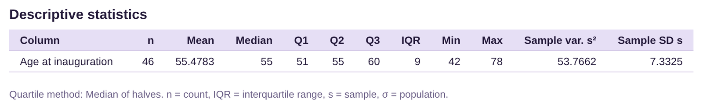
Figure 3.49: Summary output for example 6.
Solution:Step 1:The quartiles are .
Step 2:The interquartile range is
Step 3:The left or lower fence is
Any president younger than 37.5 at inauguration would be an outlier.
The right or upper fence is
Any president older than 73.5 at inauguration would be an outlier.
The minimum age was 42, so there were no presidents younger than the left fence = 37.5. The maximum age was 78, and this is higher than the right fence = 73.5, so it is an outlier. Checking the data, that is the only age that is higher than 73.5.
So, the president who was 78 years old at inauguration, Joe Biden, is an outlier in terms of his age. All the other presidents were of typical ages. See figure 3.50 for a dot-plot with the fences and showing the outlier.
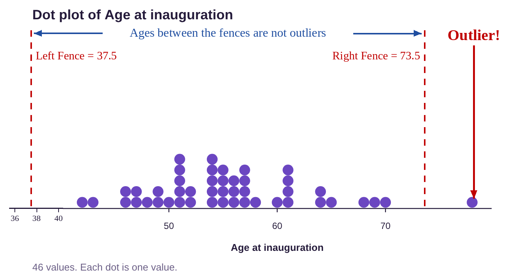
Figure 3.50: Dot-plot displaying ages of presidents at inauguration and the outlier.
Boxplots with Outliers
If we want to make a boxplot for the ages of US Presidents at inauguration, how do we denote the presence of the outlier? Using STATBELT Utility and following the same process (with “Show outliers (modified boxplot)” checked) to create the boxplot, we get the boxplot shown in figure 3.51. The outlier at 78 is marked with a dot, and the right whisker is drawn to 70, which is the highest age that is not over the right fence. This is called a modified boxplot.
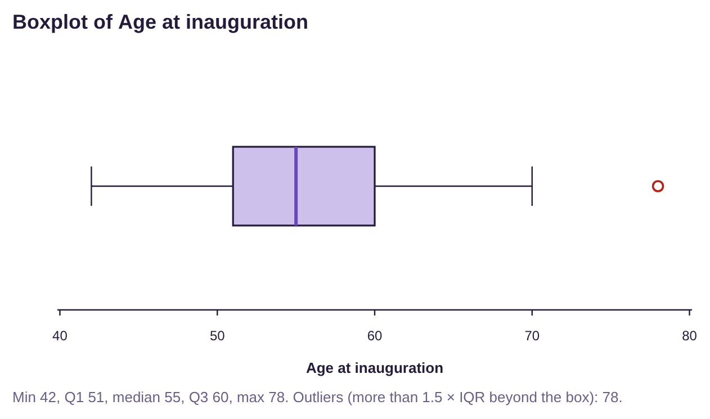
Figure 3.51: Boxplot displaying ages of presidents at inauguration with the outlier.
How to Create a Modified Boxplot
1.Find the quartiles: , = the median, and .
2.Compute the interquartile range, .
3.Compute the left fence and the right fence, .
4.Draw a horizontal number line long enough to include the minimum and maximum of the data.
5.Draw vertical lines at , = the median, and and enclose them in a box.
6.Label the left and right fences.
7.Draw the left whisker from to the smallest data value that is between the fences. Draw the right whisker from to the largest value that is between the fences.
8.Mark any outliers with a dot or asterisk.
In practice, we will use technology to create modified boxplots. But now you know that when you see a dot or asterisk, it represents an outlier among the data.
Important Point!
A dot or asterisk on a modified boxplot indicates an outlier!
Example 7: Comparing Boxplots
One semester, a professor taught two introductory statistics courses back-to-back, at 10 AM and 11AM. She was worried that the 10 AM class might tell the 11 AM class the answers to an exam, so she compared their grades to see if the 11 AM class had higher grades. The boxplots for the classes are shown in figure 3.52. Use the boxplots to answer the following questions.
a)Which class had a higher median grade?
b)Which class had a larger IQR?
c)Which class had more scores higher than 70?
d)Which class had an outlier?
e)Based on the boxplots, was the professor’s concern justified?
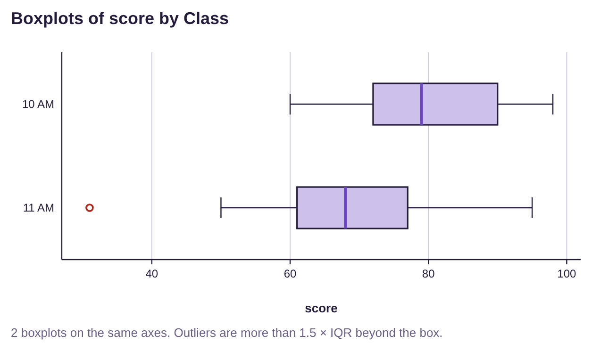
Figure 3.52: Boxplots for 10 AM and 11 AM Statistics courses.
Solution:a)The median can be seen as the darker vertical line segment in each box in the boxplots. The median for the 11 AM class appears to be lower than 70, while the median for the 10 AM class is close to 80. Therefore the 10 AM class had a higher median grade.
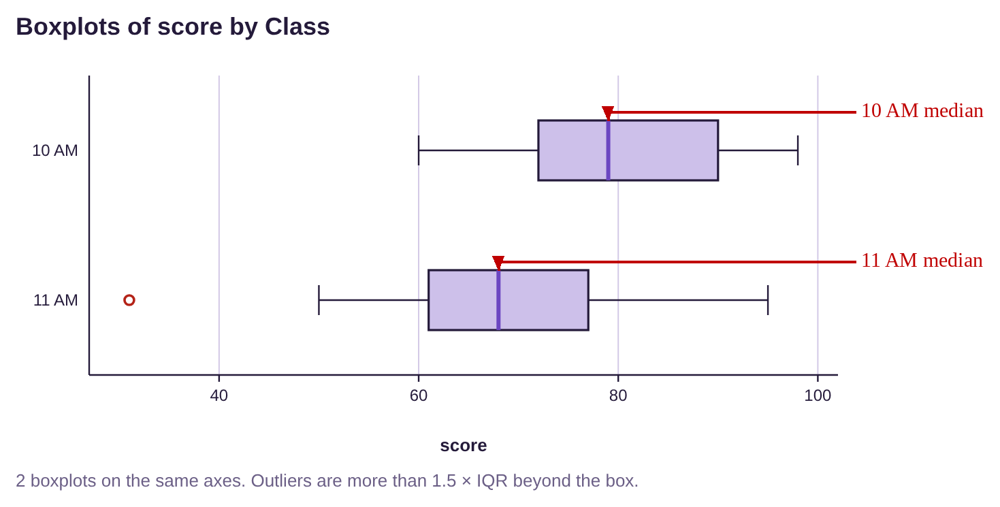
b)The width of the box containing the middle 50% of data is the IQR. Thus, the larger IQR belongs to the class with the wider box. They appear to be reasonably close, but the 10 AM class appears to be a little wider. That means that the middle 50% of scores were closer together in the 11 AM class than the middle 50% of scores in the 10 AM class.
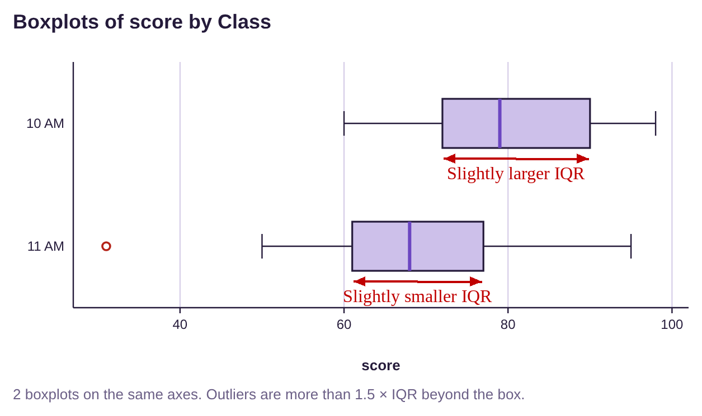
c)The median for the 11 AM class is less than 70, so fewer than half of the scores in the 11 AM class were higher than 70. The first quartile for the 10 AM class is higher than 70, so more than 75% of the 10 AM class scored above 70. So, the 10 AM class had more scores over 70.
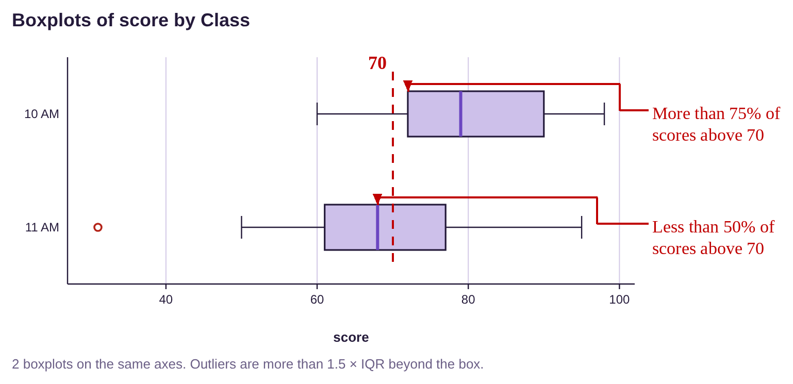
d)The 11 AM class had an outlier. It can be seen as the dot at 31 points, to the left of 40. That score was unusually low for this exam.
e)Based on the boxplots, the 10 AM class did much better on the exam. More than 75% had a C or better. In the 11 AM class, fewer than half had a C or better. There is no reason to think that the 11 AM class benefited by learning about the test from their peers who took it at 10 AM.
Boxplots and the shape of the distribution
We can also use boxplots to identify whether the distribution is bell-shaped or skewed.
If data are bell-shaped, or symmetric, the boxplot will also be symmetric. The box will be centered, and the whiskers will be approximately the same length.
If the data are skewed to the left, the boxplot will have a longer “left-side whisker” and the box will appear to be on the right of the plot. If the data are skewed to the right, the boxplot will have a longer right-side whisker and the box will appear to be on the left of the plot. The whisker that is longer corresponds to the “tail” we see in the histogram. See figure 3.53.
Skewed Left | Bell-shaped (or any symmetric distribution) | Skewed Right |
|---|---|---|
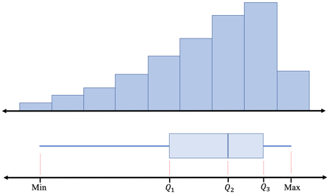 | 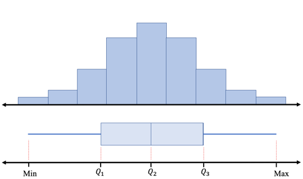 | 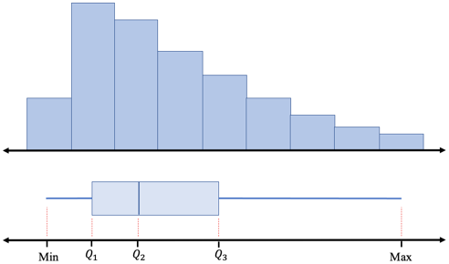 |
Figure 3.53: Boxplot shapes for bell-shaped and skewed data.
When data are skewed to the right, the “right-side whisker” of the boxplot will be longer, matching the tail of the histogram to the right. When data are skewed to the left, the “left- side whisker” will be longer, matching the histogram tail to the left.
Putting it All Together
Recall that we opened the chapter with the goal of describing quantitative data using four factors. We have now covered them all! The four factors we wish to address are
•Center- (section 3.1) a way to describe the middle, or most typical.
•Variation- (section 3.2 and 3.3) a way to describe how much the data varies.
•Distribution- (section 2.2) a way to describe the shape of the distribution.
•Outliers- (section 3.4) are there any highly unusual values?
We can now put all four descriptors to use in describing data.
Example 8: Putting it all together
Rotten Tomatoes is a movie rating service that uses reviews by professional critics as well as fan input to give a film a rating on its “Tomatometer”. The boxplot shown in figure 3.54 displays Rotten Tomatoes ratings for Marvel and DC superhero movies made through 2019. Describe the Rotten Tomatoes ratings for each company in terms of center, dispersion, shape, and outliers. You can copy the Rotten Tomatoes data (opens in a new tab).
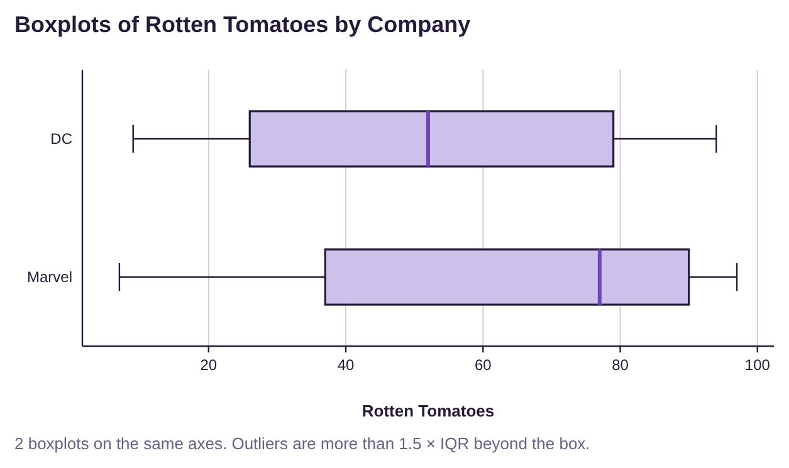
Figure 3.54: Rotten Tomatoes ratings for Marvel and DC movies.
Solution:Measures of Center- From the boxplot, we can see that the median Rotten Tomatoes rating for Marvel movies is close to 80, while the median rating for DC movies is closer to 50. Marvel has the higher median, and the box containing the middle 50% of ratings is farther to the right, so Marvel typically has higher Rotten Tomatoes ratings.
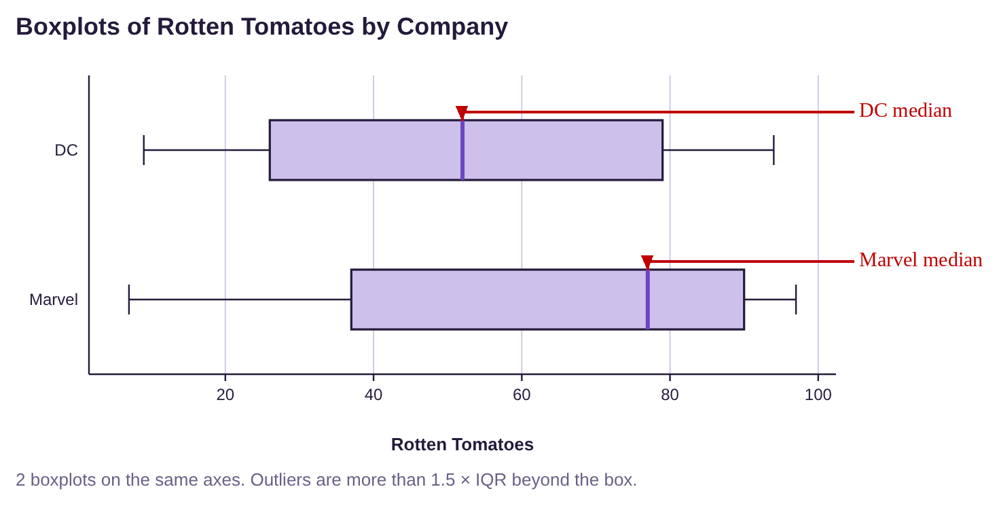
Measure of Variation- The width of the boxes appears to be very close. There is not much difference in IQR. The range of Marvel ratings is slightly larger. Variation appears to be about the same for each company.
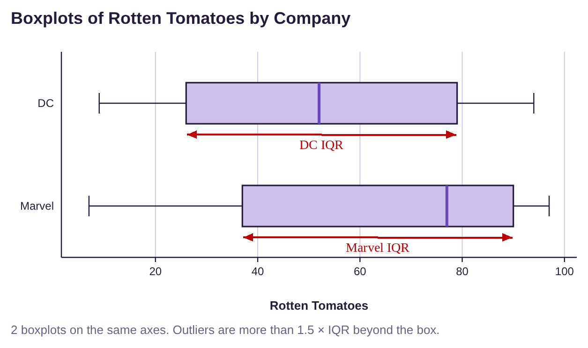
Shape of the Distribution- Marvel ratings are skewed to the left because the box is to the right of center, and the left whisker is longer. DC appears to be more symmetric and possibly bell-shaped because the left and right whiskers are close to the same length, and the box is centered.
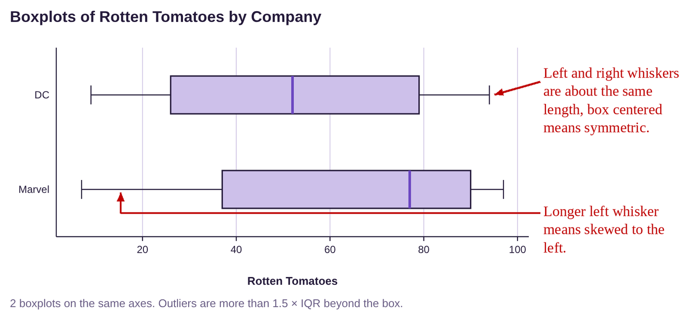
Outliers- There are no dots or asterisks on either boxplot, so there were no outliers among the Rotten Tomatoes ratings for either company.
Summary: The median rating for Marvel is approximately equal to the third quartile for DC ratings. So, half of the ratings for Marvel movies were about 80 or higher, while only 25% of DC ratings were about 80 or higher. The two companies have approximately the same amount of variation, but the Marvel movies have had consistently higher Rotten Tomatoes ratings.
Example 9: Putting it Together- Unemployment Rates
Table 20 lists the unemployment rates for Black and White Americans from 1990 to 2019. (a) Make boxplots and describe the distributions for each group in terms of center, variation, shape, and outliers. (b) In 2020, during the COVID-19 pandemic, the unemployment rate for Black Americans rose to 16.8%, and the unemployment rate for White Americans rose to 12.4%. Would these unemployment rates be outliers when compared to the rest of the data from 1990 to 2019? You can copy the unemployment data (opens in a new tab).
Table 24: Unemployment Rates for Black and White Americans 1990 to 2019 | ||||||||
|---|---|---|---|---|---|---|---|---|
Year | Black | White | Year | Black | White | Year | Black | White |
1990 | 11.4 | 4.8 | 2000 | 7.6 | 3.5 | 2010 | 16 | 8.7 |
1991 | 12.5 | 6.1 | 2001 | 8.6 | 4.2 | 2011 | 15.8 | 7.9 |
1992 | 14.2 | 6.6 | 2002 | 10.2 | 5.1 | 2012 | 13.8 | 7.2 |
1993 | 13 | 6.1 | 2003 | 10.8 | 5.2 | 2013 | 13.1 | 6.5 |
1994 | 11.5 | 5.3 | 2004 | 10.4 | 4.8 | 2014 | 11.3 | 5.3 |
1995 | 10.4 | 4.9 | 2005 | 10 | 4.4 | 2015 | 9.6 | 4.6 |
1996 | 10.5 | 4.7 | 2006 | 8.9 | 4 | 2016 | 8.4 | 4.3 |
1997 | 10 | 4.2 | 2007 | 8.3 | 4.1 | 2017 | 7.5 | 3.8 |
1998 | 8.9 | 3.9 | 2008 | 10.1 | 5.2 | 2018 | 6.5 | 3.5 |
1999 | 8 | 3.7 | 2009 | 14.8 | 8.5 | 2019 | 6.1 | 3.3 |
Solution:(a)We first used this data in section 3.3 example 12. If you already saved the data, import it with Data → Import or export data and you are ready to go. Otherwise, copy or type the data into STATBELT Utility in three columns named Year, Black, and White (or load “Unemployment Rates 1990-2020” from the “Sample Data” menu and clear the 2020 row).
To make the boxplots, select Graphs → Boxplot. Check both “Black” and “White” under “Columns to plot,” check “Show outliers (modified boxplot),” and then click “Open graph in a new window.” The boxplot is shown in figure 3.55.
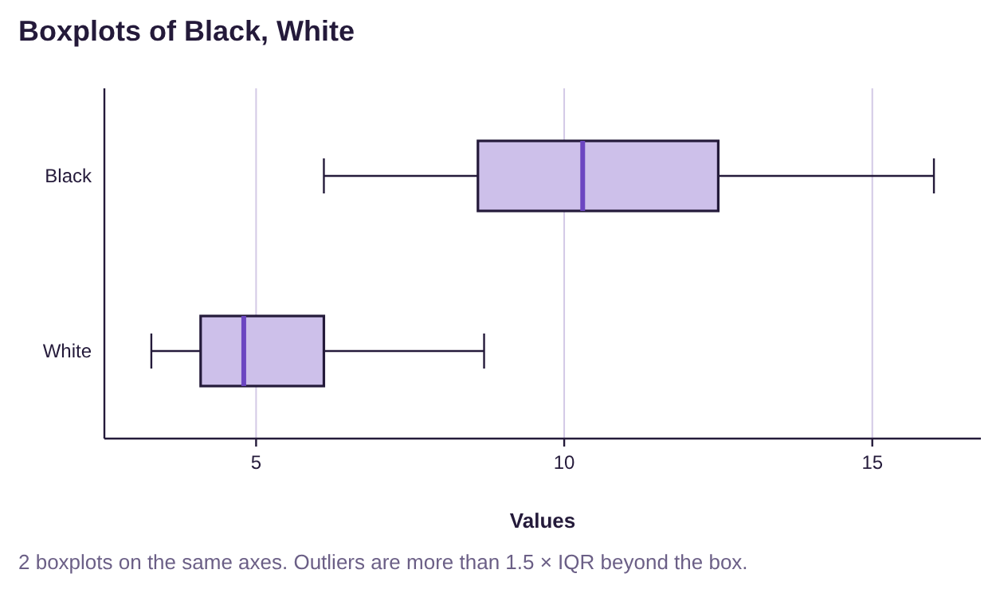
Figure 3.55: Unemployment rates for Black and White Americans from 1990 to 2019.
Measures of Center- From the boxplots, we can see that the median unemployment rate for Black Americans is much higher than the median unemployment rate for White Americans. The box for Black Americans is farther to the right than the box for White Americans, so the typical unemployment rate for Black Americans is higher than for White Americans.
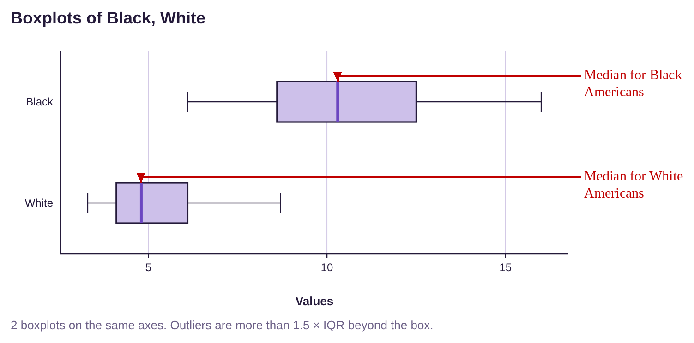
Measure of Variation- The width of the box for Black Americans appears to be larger than the width of the box for White Americans. This tells us that the IQR is larger and there is more variation among the unemployment rates for Black Americans than for White Americans.
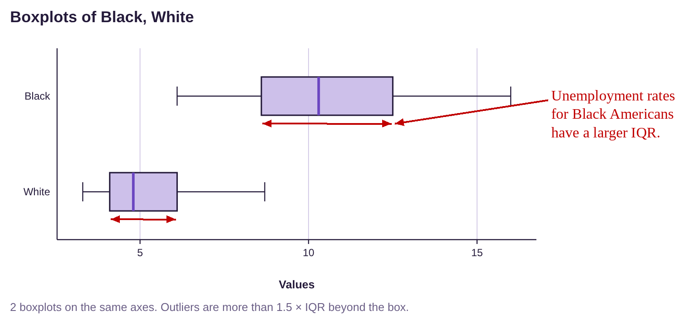
Shape of the Distribution- The boxplot for White Americans appears to be skewed to the right because the right whisker is longer, and the box is to the left of center. The unemployment rates for Black Americans appears to be more symmetric, possibly bell shaped.
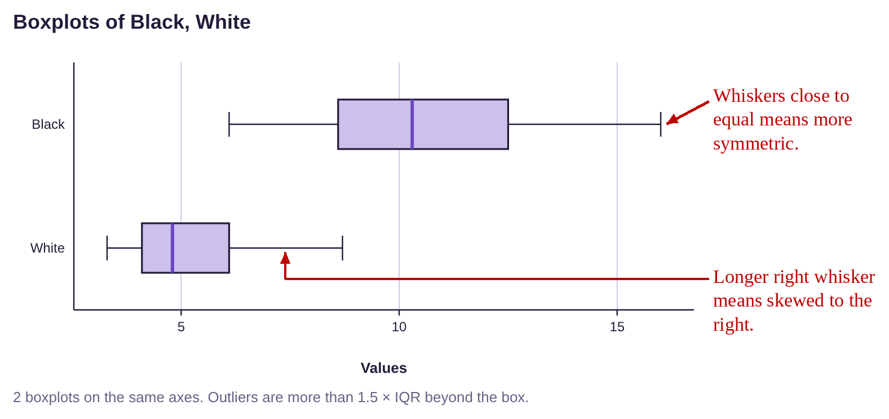
Outliers- There are no dots or asterisks on either boxplot, so there were no outliers among the unemployment rates for either group.
Summary: Unemployment rates for Black Americans have been historically higher than unemployment rates for White Americans. Additionally, rates for Black Americans are more variable while rates for White Americans have been consistently lower.
(b)In 2020, the unemployment rate for Black Americans rose to 16.8%. Would this be an outlier, based on prior years? What about an unemployment rate of 12.4% for White Americans? We need to determine the fences for each group. The output from section 3.3, example 12 is shown in figure 3.56. We will use that to find the quartiles.
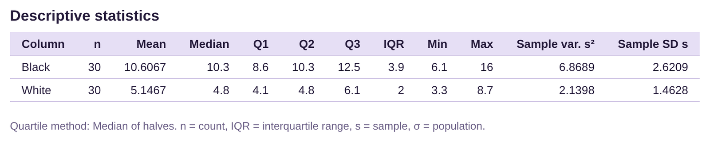
Figure 3.56: Summary Statistics for Unemployment rates for Black and White Americans 1990 to 2019.
Black Americans: . The interquartile range is
.
The left or lower fence is
The right or upper fence is
So, an unemployment rate of 16.8% for Black Americans is between the fences, and not an outlier.
White Americans: . The interquartile range is
.
The left or lower fence is
The right or upper fence is
So, an unemployment rate of 12.4% for White Americans is not between the fences, and so it is an outlier. See figure 3.57.
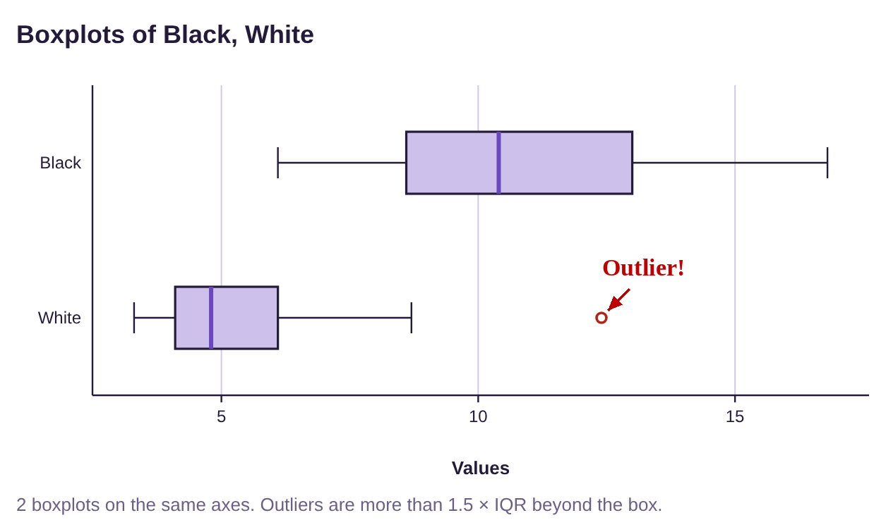
Figure 3.57: Boxplots for Unemployment rates for Black and White Americans 1990 to 2020.
To summarize, the pandemic caused a spike in unemployment rates for both Black and White Americans. Due to the much larger variation in rates for Black Americans, the spike in unemployment among Black Americans was not considered an outlier. However, due to the much more consistent and low unemployment rates for White Americans, the spike to 12.4% was an outlier for them. Even though the unemployment rate for Black Americans was much higher, it was not an outlier for their group. In fact, looking at the Table 24, you can see that 20 of the 30 unemployment rates for Black Americans since 1990 are higher than the right fence for White Americans. In other words, two-thirds of the unemployment rates for Black Americans would be considered outliers for White Americans. This is an example of historic inequity and structural racism in the United States of America.
Photo by Emmanuel Ikwuegbu (opens in a new tab) on Unsplash (opens in a new tab)
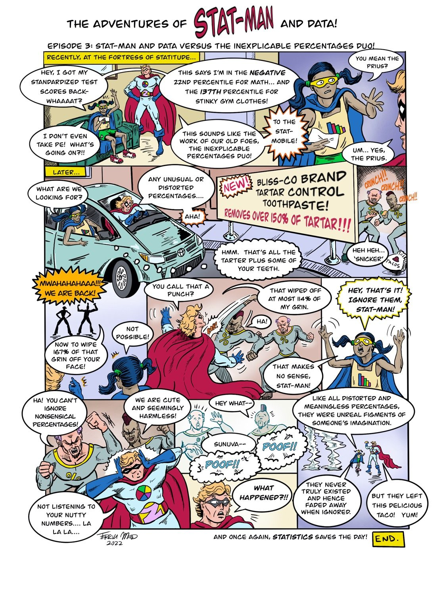
Text version of the comic
The Adventures of Stat-Man and Data! Episode 3: Stat-Man and Data versus the Inexplicable Percentages Duo!
Caption: Recently, at the Fortress of Statitude…
Data sits on the couch reading a paper while Stat-Man stands nearby.
Data: Hey, I got my standardized test scores back- Whaaaat?
Data: This says I’m in the negative 22nd percentile for math… and the 137th percentile for stinky gym clothes!
Data: I don’t even take PE! What’s going on?!!
Stat-Man: This sounds like the work of our old foes, the Inexplicable Percentages Duo!
Stat-Man: To the Stat-mobile!
Data: You mean the Prius?
Stat-Man: Um… yes, the Prius.
Caption: Later…
Stat-Man and Data drive in the Prius.
Data: What are we looking for?
Stat-Man: Any unusual or distorted percentages…. Aha!
A billboard reads: NEW! Bliss-Co Brand Tartar Control Toothpaste! Removes over 150% of tartar!!!
Stat-Man: Hmm. That’s all the tartar plus some of your teeth.
Behind the billboard, the Inexplicable Percentages Duo munch tacos (CRUNCH!! CRUNCH!! CRUNCH!!). Duo: Heh heh… ‘snicker’
Duo: MWAHAHAHAAA!!! We are back!
Duo: Now to wipe 167% of that grin off your face!
Data: Not possible!
One villain punches Stat-Man (BONK!). Stat-Man: You call that a punch? That wiped off at most 114% of my grin.
Villain: Ha!
Data: That makes no sense, Stat-Man!
Data: Hey, that’s it! Ignore them, Stat-Man!
Villain: Ha! You can’t ignore nonsensical percentages!
Villain: We are cute and seemingly harmless!
Stat-Man covers his ears. Stat-Man: Not listening to your nutty numbers…. La la la….
The villains fade away. Villains: Hey what-- Sunuva-- POOF!! POOF!!
Caption: Like all distorted and meaningless percentages, they were unreal figments of someone’s imagination.
Stat-Man: What happened?!!
Data: They never truly existed and hence faded away when ignored.
Stat-Man: But they left this delicious taco! Yum!
Caption: And once again, statistics saves the day! End.
Signed: Terrill Mead 2022